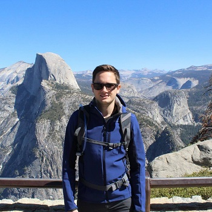

Short Bio
I did a PhD in computer science at UKP Lab and AIPHES at Technische Universität Darmstadt, Germany, working on natural language processing. The goal of my research was to simplify browsing and exploring large collections of documents. I worked on automatic text summarization, information extraction, deep learning and interactive learning to build tools towards that goal.
From April to June 2018, I interned in Google's NYC office and worked on natural language understanding for Google Assistant. In March 2019, I joined Amazon's Alexa AI group as an Applied Scientist. I'm currently working from Berlin, Germany.
For a more comprehensive bio, please check out my LinkedIn profile.